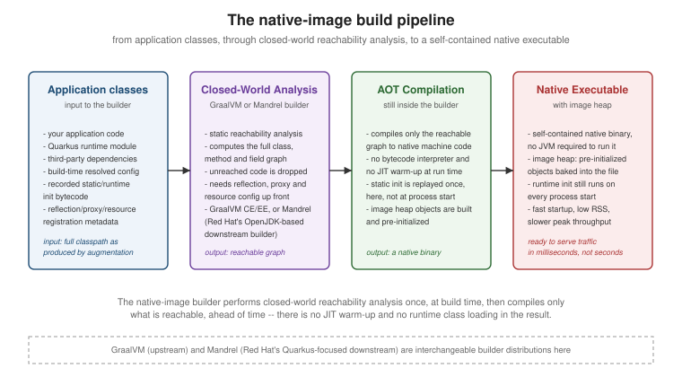

Native Executables with GraalVM/Mandrel
|
This content was generated with the assistance of AI and should be verified against the official documentation before being relied on in production. |
A native executable is what you get when GraalVM’s (or Mandrel’s) native-image tool takes the closed,
already-augmented application Quarkus produces and ahead-of-time compiles it straight to machine code, instead of
packaging it as a JAR the JVM interprets and JIT-compiles at run time. The payoff — startup measured in
milliseconds and a resident memory footprint a fraction of the equivalent JVM process — is real, but it is not
free: it depends on the same closed-world assumption Quarkus' augmentation is built on, and it fails loudly for
any code path that assumption cannot see through. This page covers how the native build actually gets performed,
what commonly breaks and how to fix it, how to debug and honestly benchmark the result, and when paying the
native-build cost is actually worth it.
How the native build works
Quarkus' own build-time augmentation, covered in
Build-Time Augmentation and the Closed World, already
resolves CDI beans, config and routes ahead of time and records the bytecode needed to reproduce them. Building a
native executable adds one more closed-world step on top of that: the native-image tool performs its own
static reachability analysis over the augmented application — computing the full graph of classes, methods and
fields the program can actually reach from its entry points — and ahead-of-time compiles only that graph into
the resulting binary. Anything the analysis cannot prove is reachable (an arbitrary Class.forName, an
unregistered proxy, a resource never referenced in code) is not there to be called at run time, which is why the
failures below are so consistently reflection-, proxy- and resource-shaped: see
Build-Time Augmentation and the Closed World for the full
explanation of why that assumption exists and what augmentation does to satisfy it.
That analysis is performed by one of two interchangeable builder distributions:
-
GraalVM — the upstream distribution (Oracle GraalVM or GraalVM Community Edition), which bundles
native-imagealongside the rest of GraalVM’s polyglot and JIT-compiler machinery. Useful when a project needs GraalVM features beyondnative-imageitself. -
Mandrel — Red Hat’s downstream distribution, built from a matching upstream OpenJDK with the non-Java polyglot components stripped out, and maintained specifically to build Quarkus native executables predictably. It is what Quarkus' own container builder images use by default, and is the recommended choice when
native-imageis the only thing being built.
Running the build: local vs. container
The simplest invocation runs the builder against whatever GraalVM/Mandrel installation JAVA_HOME (or
GRAALVM_HOME) points at:
./mvnw package -DnativeThis requires a matching GraalVM or Mandrel distribution installed locally, with the native-image component
available (gu install native-image on a GraalVM distribution that does not bundle it already). That requirement — and the fact the exact builder version matters — is why most teams instead build inside a container, using
the same builder image CI will use, without installing anything locally:
./mvnw package -Dnative -Dquarkus.native.container-build=truequarkus.native.builder-image pins exactly which container image performs the build (Quarkus defaults to a
Mandrel-based image matching the project’s Quarkus version); pin it explicitly in application.properties when a
build needs to be reproducible across machines and CI:
quarkus.native.container-build=true
quarkus.native.builder-image=quay.io/quarkus/ubi9-quarkus-mandrel-builder-image:jdk-21Memory and time, honestly
A native build is not a javac invocation with extra steps — it is a whole-program static analysis followed by
ahead-of-time compilation, and both stages are memory- and CPU-hungry. Budget realistically:
-
Memory: non-trivial Quarkus applications commonly need 4-8GB or more of RAM available to the builder. Under-provisioning shows up as the build being killed (OOM) rather than as a clean error.
quarkus.native.native-image-xmxcaps (or, more usefully, raises) the heap thenative-imageprocess itself is allowed, independent of the container’s own memory limit:quarkus.native.native-image-xmx=6g -
Time: a native build of a modest service commonly takes several minutes, growing with the size of the dependency graph the reachability analysis has to walk; this is a real, measurable cost on every CI run that produces a native image, not a one-time tax, and is the main reason native builds are usually a separate, slower CI job rather than the default
packagetarget.
What fails under native-image, and how to fix it
Because only what the reachability analysis can prove reachable survives, the failure modes below are the practical, everyday shape the closed-world assumption takes:
| Problem | Fix |
|---|---|
Reflection on a class the analysis never saw a static reference to |
Annotate the application’s own class with |
Dynamic proxies for an interface the analysis was never told about |
Register the proxy’s interfaces the same way ( |
Resources loaded via |
Bundle them explicitly with |
JNI bindings to native libraries |
Register the JNI-accessed classes/methods the same way reflection is registered (a JNI configuration file
referenced from |
Java serialization |
|
Before writing any of the above by hand, check whether the library already has a Quarkus extension or a community-maintained one on Quarkiverse — both cases are covered in more depth, alongside the general "no extension" decision tree, in Build-Time Augmentation and the Closed World.
Build-time vs. run-time class initialization
native-image defaults most classes to run-time initialization — their static initializers run when the
executable starts, not when it is built — but Quarkus itself moves a large share of its own and its extensions'
classes to build-time initialization for speed, since that state is then baked straight into the image heap.
The place this distinction actually bites application code is anywhere a static initializer produces something
that must differ per process rather than be frozen once into every binary the build produces: a
SecureRandom/RNG seeded in a static initializer, or a native library loaded via System.loadLibrary, must stay
run-time-initialized, or every executable built from that image ships with the same frozen seed or the same
resolved native-library state. Force run-time initialization for a specific class via
quarkus.native.additional-build-args:
quarkus.native.additional-build-args=--initialize-at-run-time=com.example.MyRandomHolderSSL/TLS in native mode
Quarkus extensions that need TLS (the REST client, gRPC, reactive database drivers) usually get the necessary native-image SSL support included automatically because augmentation can see the need at build time. When nothing in the dependency graph signals it, force it on explicitly:
quarkus.ssl.native=trueNative TLS also depends on the SunEC provider (elliptic-curve cryptography), which has historically needed extra native-image registration and has had narrower algorithm coverage than on the JVM; if a native executable fails or behaves differently on TLS handshakes that work fine in JVM mode, that provider is the first place to look.
Debugging, profiling and testing a native binary
A native executable is not a JVM process, so most of the familiar Java tooling either does not apply or applies only partially:
-
gdb-based debugging: build with
quarkus.native.debug.enabled=trueto havenative-imageemit debug symbols, then attachgdbto the resulting binary. It gives source-level debugging of native code, but not the hot-swap or the rich object inspection a JVM debugger gives against a running JVM process. -
VisualVM/perf and profiling: VisualVM, JFR-based tooling, and heap dumps built around the JVM largely do not apply, because there is no JVM underneath a native executable. Linux
perfcan profile the binary at the machine-code level, but without the method-name-rich mapping a JVM profiler gives; some JFR event support exists in newer GraalVM/Mandrel releases, but its event coverage remains narrower than on the JVM. Treat native profiling as a lower-resolution instrument than its JVM equivalent, not a drop-in replacement. -
Compressing the binary with UPX:
quarkus.native.compression.level(0 disables compression) trades a slightly slower startup, spent decompressing, for a smaller binary — useful for container image/registry size, not something that helps runtime speed.
Testing the actual native artifact
@QuarkusTest runs your tests in the same JVM process as the application, which says nothing about the native
executable actually built from it. io.quarkus.test.junit.QuarkusIntegrationTest instead starts the already
built artifact (native executable, or JAR, whichever the build produced) as a separate out-of-process instance
and exercises it over the network, giving a test that fails if native-image dropped something reflection needed
or a resource never got bundled:
package com.example;
import io.quarkus.test.junit.QuarkusIntegrationTest;
import io.restassured.RestAssured;
import org.junit.jupiter.api.Test;
import static org.hamcrest.Matchers.is;
@QuarkusIntegrationTest
class GreetingResourceIT {
@Test
void helloEndpointRespondsOverHttp() {
RestAssured.given()
.when().get("/hello")
.then()
.statusCode(200)
.body(is("hello"));
}
}Run it as part of the verify phase, after the native build has actually produced the artifact it tests against
(./mvnw verify -Dnative).
Measuring startup and RSS honestly
Do not report a single anecdotal number from one run. A defensible methodology looks like:
-
Cold start: wrap the process launch with
time, but measure to the point the application actually answers a health check or first request — not merely to process exit — and repeat several times, since the very first invocation on a machine also pays one-off OS page-cache warm-up that later runs will not. -
Resident memory: sample
ps -o rss= -p <pid>(or readVmRSSfrom/proc/<pid>/statuson Linux) once shortly after the startup log line, and again after the process has served some real traffic — a snapshot taken at the very first instant tends to understate steady-state RSS. -
Warm-up: a native executable has no JIT warm-up curve to speak of, but a JVM-mode comparison point absolutely does — comparing a cold-started native process against a JVM process that has already been warmed up (or vice versa) is a common way these numbers get quietly misleading.
The Quarkus performance-measurement guide covers this in more depth, including load-testing tools and the effect of container CPU/memory limits and CPU frequency scaling on the numbers — read it before publishing a benchmark either direction.
Native vs. JVM: the honest trade-off
| Dimension | Native executable | JVM mode |
|---|---|---|
Startup time |
Milliseconds — no class loading, no JIT warm-up |
Slower cold start; class loading and JIT compilation happen at process start |
Memory footprint (RSS) |
Low and predictable — no JIT/metaprogramming machinery resident |
Higher baseline; the JVM’s own runtime, JIT compiler and class metadata all cost RSS |
Peak throughput (after warm-up) |
Generally lower than a fully JIT-warmed JVM — the ahead-of-time compiler cannot apply the profile-guided optimizations a warmed-up JIT does |
Generally higher once warmed up — the JIT compiler specializes hot paths using real runtime profiles |
Build time |
Minutes, memory-hungry, needs a dedicated builder (local install or container image) |
Ordinary |
Tooling and observability maturity |
Limited: no JVM-based profilers, partial/no heap dumps, narrower JFR coverage, gdb-only debugging |
Full JVM tooling: VisualVM, JFR, heap dumps, attach-based debuggers, mature APM agents |
Best fit |
Fast cold start and memory density matter more than peak throughput or tooling depth (serverless, scale-to-zero, high replica counts) |
Peak throughput, long-running processes, and full observability/debugging tooling matter more than cold-start latency |
When native’s build cost or tooling gap outweighs its startup/memory win, a JAR is still the right choice — see Packaging and JVM Modes for the JVM-mode packaging alternatives, including JLink-trimmed runtimes that recover some of native’s memory benefit without leaving the JVM.
The pipeline the builder actually runs, from application classes to the final binary, looks like this:
